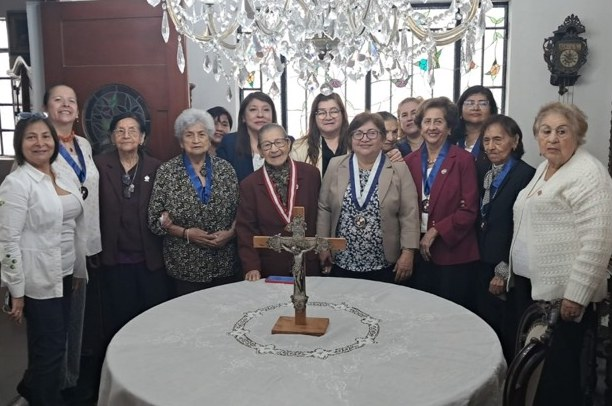

Institucional
2026 · 1 min de lectura
Juramentó el Consejo Directivo para el periodo 2025–2027
En ceremonia solemne, las integrantes del nuevo Consejo Directivo, presidido por María Amelia Asenjo Azpilcueta, asumieron sus cargos conforme al estatuto.
Leer la nota